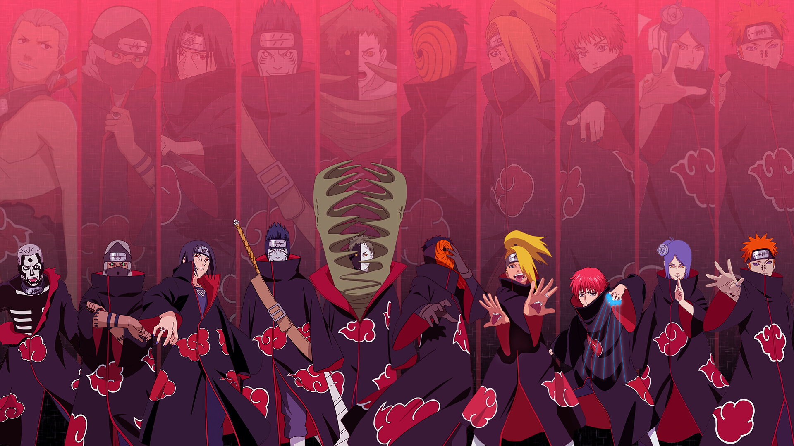

Itachi Uchiha was a shinobi of Konohagakure's(Hidden Leaf Village's) Uchiha clan that served as an Anbu Captain. He later became an international criminal after murdering his entire clan, sparing only his younger brother, Sasuke. He afterwards joined the international criminal organisation known as Akatsuki, whose activity brought him into frequent conflict with Konoha and its ninja — including Sasuke — who sought to avenge their clan by killing Itachi. Following his death, Itachi's motives were revealed to be more complicated than they seemed and that his actions were only ever in the interest of his brother and village, making him remain a loyal shinobi of Konohagakure to the very end. Itachi was the first child born to Mikoto and Fugaku Uchiha. His early childhood was marked with violence: when he was four years old, the Third Shinobi World War waged and he witnessed first-hand many of the war's casualties. The death and destruction he experienced at such a young age traumatised Itachi and made him a pacifist,[6] leading to him training non-stop to achieve his dream of becoming a ninja among ninja in order to erase fighting from the world.
PicturesNagato (Pain) was a shinobi of Amegakure(Hidden Rain Village) and descendant of the Uzumaki clan. Forming Akatsuki alongside his friends (and fellow war orphans) Yahiko and Konan, Nagato dreamed of bringing peace to the violent shinobi world. However, following Yahiko's death, Nagato adopted the alias oNagato lived with his parents: Fusō and Ise on the outskirts of Amegakure. When he was very young, Madara Uchiha secretly transplanted his Rinnegan into Nagato without his or his parents' knowledge.Sometime later, during the Second Shinobi World War, Nagato and his parents took shelter in their home to avoid the fighting going on around them. One day, two Konoha shinobi broke into their home looking for food and Nagato and his parents tried to sneak out unnoticed. When they were discovered, his parents attacked the shinobi so that Nagato could escape. The Konoha ninja killed his parents in self-defence and, upon realising they were only civilians, tried apologising to Nagato.
Sasori renowned as Sasori of the Red Sand was an S-rank missing-nin from Sunagakure's Puppet Brigade and a member of Akatsuki, where he was partnered with Orochimaru and later Deidara.When Sasori was young, his father and mother were killed by Sakumo Hatake in battle,[4] leaving him in the care of his grandmother, Chiyo. When Chiyo attempted to cheer him up by teaching him puppetry, Sasori's innate aptitude for the art became apparent, and he even began to devise masterful ways of eliminating a puppet master's weaknesses in battle. His skills even allowed him to create two puppets in the image of his parents in an attempt to discard the terrible loneliness he felt. However, as the puppets were unable to give him the real parental love that he desired, Sasori lost interest in them, and they later fell into Chiyo's possession. Sasori created many other ingenious puppets, including Kuroari, Karasu, and Sanshōuo.